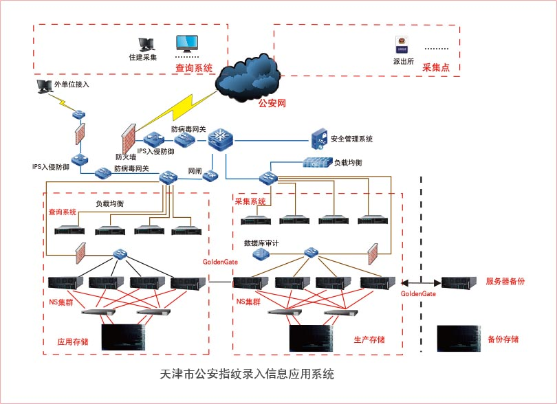

方案设计
为了解决生产系统与查询系统之间性能相互影响，在设计架构的初始便是以数据为中心，使得生产与查询自建信息系统。生产系统承载数据录入业务，保证数据采集录入过程中稳定性；应用系统解决不同业务单元的查询应用，保证数据查询的准确性。而两套系统中数据的同步则是依靠基于Oracle Golden Gate软件来实现，通过数据库容灾软件，使得生产数据能够实时同步到查询系统中，以保证查询/采集系统数据的一致性，但相互业务互不影响。系统拓扑图如下：
业务服务器及数据库服务器在物理上将会设计成为两部分，前端是用来做采集点的数据录入，分布在全市的500个终端用户通过部署在信息中心的防火墙及流量控制器接入千兆核心交换机，其间需要通过入侵检测服务器、认证网管、用户认证等安全措施确保连接的合法性，并通过负载均衡系统分布到前端数量众多的应用服务器中。后端是四台高配的企业级服务器,通过Oracle数据库集群对外提供数据录入功能，同时设置了光纤线路的路径冗余，从而保证数据的高可用性。在公安网系统中有一台数据库备份服务器，通过Golden Gate软件功能实现与生产数据之间的备份。
另一方面将新建查询系统，在架构设计上使应用系统与采集系统分开。前端是业务服务器，用于负载前端如计生，社保，市政等不同业务种类的查询，同时后端放置四台企业级服务器，通过Oracle数据库集群对外提供数据查询功能，同时设置了光纤线路的路径冗余，从而保证数据的高可用性。
生产存储与应用存储之间数据的同步则是此次方案的亮点。通过具有容灾功能的Oracle Golden Gate软件，可以将在生产存储的数据实时同步至查询存储中，满足前端业务对数据的查询功能。构建此套系统，不仅可以将生产数据与应用数据分开，提高生产系统的性能，还能够保证数据采集的连贯性。
产品配置

客户收益
方案实施后，成功的为公安客户提供了内网的生产数据与外网查询数据对系统性能瓶颈影响的解决方案。该方案既能够保证公安内部人口信息的录入业务，同时也能够满足人口信息系统的对外查询业务。此方案也解决了也克服了公安网络和外网数据安全问题，保证了数据安全同步又实现人口信息系统对外和对内业务相对独立。本次整体方案的基础设备与实施均由联想提供，减少了客户实施售后阶段的沟通成本。